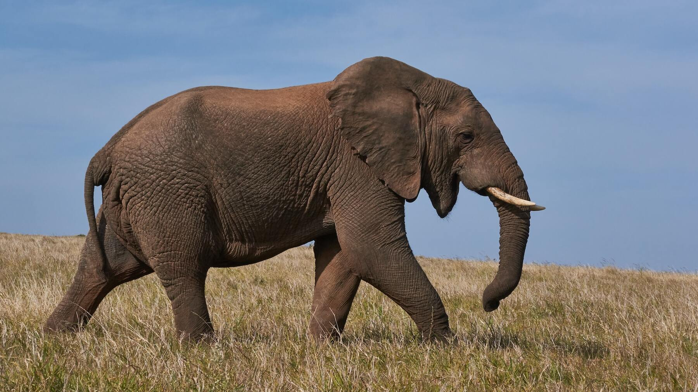

Elefante
Hipervínculos externos
Tipos de elefantes y donde viven
National Geographic
Hipervínculos Internos
Menú
Elefante
Caracteristicas
Alimentación
Principales Tipos
Elefantes
¿Qué son los elefantes?
Son animales mamíferos, exclusivamente herbívoros cuya característica principal –además del gran tamaño– es su larga trompa y sus enormes orejas. Se organizan en manadas de unos 20 miembros, miden casi 4 metros los ejemplares más grandes y pueden llegar a pesar más de 6.000 kilos.
Característicass
Características destacadas de los elefantes:
- Son animales voluminosos, cuyos cuerpos pueden medir cerca de 4 metros de alto y varias toneladas de peso (en promedio, unos 7500 kg). Su cerebro, el más grande de todos los animales terrestres, pesa por sí solo 5 kg, y le confiere al elefante una inteligencia comparable con un cetáceo o algunos primates.
- Su trompa, el rasgo más conocido de la especie, posee miles de músculos (40.000 o 100.000 según las diferentes fuentes) y es una sensible prolongación de la nariz, capaz de percibir una inmensa gama de olores lejanos (los elefantes poseen el mejor olfato de todas las especies), recoger comida del suelo, aspirar y verter agua en su boca o en su cuerpo para refrescarse, o emitir sonidos de diversa gama, incluídos los infrasónicos
- Al mismo tiempo, poseen pabellones auriculares enormes, que les permiten un agudo sentido del oído. Poseen en cambio una mala visión, con sus ojos a los costados de la cabeza, lo cual los hace particularmente sensibles a los movimientos bruscos y repentinos, a los que suelen responder con agresividad.
- Los machos de la especie poseen dos gigantescos colmillos de marfil, prolongación de sus dientes incisivos, que sobresalen de su mandíbula superior y que estos animales usan para abrirse camino en la espesura, escarbar en el suelo, marcar su territorio o atacar y defenderse, en caso de que haga falta. Compuestos de marfil, han sido muy cotizados en la historia y son una razón por la cual se les ha dado tan extensa cacería.
- Su piel es gruesa y arrugada, de color grisáceo o amarronada, y poseen un pelaje ralo poco abundante. Para evitar la deshidratación, suelen invertir mucho tiempo en el agua, y cubrirse con una película de lodo que los proteja de la luz solar.
- Tradicionalmente se les atribuye buena memoria, lo cual pareciera ser cierto, y se sabe que poseen una interacción social rica, con gestos abundantes de empatía, compasión, juego, uso primitivo de herramientas y autorreconocimiento.

Alimentación
Los elefantes son herbívoros, y su dieta se compone principalmente de hierbas, semillas, cortezas y otras fibras vegetales.
Debido a su gran tamaño y sus altos requerimientos energéticos, los elefantes necesitan consumir grandes cantidades de alimentos para satisfacer sus necesidades nutricionales. Se estima que un elefante adulto puede ingerir entre 100 y 300 kilogramos de alimentos al día, dependiendo de la disponibilidad de recursos en su entorno.
Principales Tipos
- Elefantes africanos (género Loxodonta): dos especies distintas, que son el elefante africano de matorral (Loxodonta africana), y el elefante africano de la selva (Loxodonta cyclotis).
- Elefantes asiáticos (género Elephas): una sola especie que se clasifica a su vez en tres subespecies actuales: el elefante de Sri Lanka (Elephas maximus maximus), el elefante indio (Elephas maximus indicus) y el elefante de Sumatra (Elephas maximus sumatranus).